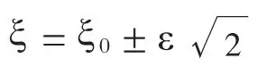
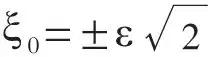

英文
英文爱丁顿
编者按
阿瑟·爱丁顿是英国迄今为止最杰出的天文学家。后来他将注意力转向了新量子力学所引发的问题上。巴巴声称量子力学不适用于高能原子粒子的行为，爱丁顿随即对这一观点作出了回应。他阐述了理论上如何描述所有的原子核，进而认为量子力学没必要修正。不过遗憾的是巴巴和爱丁顿都没有意识到，当在他们的理论中引进介子后，相应会出现的一些新的问题。 英文
在2月18日《自然》杂志上巴巴博士的文章中，提到了量子理论在短程和高能中存在问题。这似乎可以广泛的解释为需要对我们现有的物理概念的有效性做出限定。某些问题确实与基本的时间和空间结构的不连续性相关。现在严苛地质疑巴巴博士的文章还为时过早，就该文而言，它与更极端的解释相反。但我要冒昧地提出一个小的疑问，即究竟什么才真正是相对论的基本点。简言之，我们知道为什么现有的理论已经处于困境，并且我们也知道如果要克服这些困难必须要考虑什么。 英文
相对论以否认绝对运动为出发点。每一个我们观测到的速度dx/dt都是两个物理对象的相对速度。同样地，“x”是两个物理对象之间的相对位移，而速度是“x”对时间的一阶导数。两个物体都与海森堡所指出的时空框架相联系；即它们并不是像三维空间中的点（或四维时空中的世界线）那样有确定的位置，它们的位置和动量具有不确定性。 英文
通常，dx/dt和x赋予其中一个物体（本文称之为实物粒子），另一个则被视为是参照物。显然，在精确的公式中，参照物必须是一个粒子。这个参照粒子即为物理“原点”，我们可以由此测量实物粒子的可观测坐标x。目前的量子理论已重复了相对论前时期的错误，即对精确公式所对应的物理参考系的定义不够重视。该理论虽然清楚地表达了包含x和∂/∂x的公式，但却忽略了对x所参照的原点的位置和动量的标准偏差（不确定度）的测定。显然，公式并不可能对任意的一个标准偏差都是正确的；如果公式正确，它必然对应于特定位置的标准偏差ε，并且这个标准偏差也应当已确定。由于不存在明确的参照系，ε的实际值必然隐含在量子公式的经验常数（例如h/mc）中。 英文
当考虑分别位于坐标x1和x2中的两个实物粒子时，一个粒子相对于另一个粒子的位移ξ0是可观察的，这与任何坐标原点无关，也就是本文第二段中称为“x”的原始可观测量。一定不要把它与坐标差ξ = x2 – x1相混淆，坐标差引入了测量x1和x2时所参照的物理原点两倍的不确定度。我们得到（用误差理论的符号表示）

目前理论的失败主要是忽略了两个可观测量ξ和ξ0的区别所致。 英文
物理原点具有位置和动量两种不确定度；因为如果其中任意一个物理量为零，那么另一个物理量必将是无穷大，那么物理原点就不会以有限的世界线接近几何原点。因此，存在一个对应于不确定动量均方值的能量m0c2与原点相联系。除了在二体问题中（其中一个实物粒子作为另一个的物理原点），实际上对所有的物体粒子都作无差别处理；我们用一个附加的虚粒子作为物理原点，即把一个粒子作为测量装置的一部分插入到系统中，但不计入实物粒子，而仅将其作为测量时所包含的系统扰动来考虑。能量m0c2对应于虚粒子考虑的物理原点，并给出其固有质量m0。为了可以确定量子方程，物理原点的不确定量ε和m0必须具有标准值。 英文
当然，忽略了原点不确定度ε的物理学家将会发现，他们的方程在量级为ε时会失效。空间本身没有问题；问题出在那些理论工作者身上，他们无法成功地应用自己的理论将可观测的物理系统与空间相联系。他们的失败可以概括地表述为：存在两个公认的关于可观测性的原理，即量子理论和相对性原理，在前者中可观测的物体对几何时空框架具有不确定关系，在后者中可观测的量与两个可观测的物体相关。目前的理论认为，这些原理相互独立无法结合；当我们处理坐标和动量时，仅需注意其关系中实物粒子端的不确定度。 英文
补救措施是明显的。我并不是说完成修正是一件简单的事情；但是，如果它是一件最值得去做的事情，那就不会使任何人畏缩不前。一位不能解决自己“三体问题”的天文学家，只能羡慕物理学家处理原子核中大量存在短程相互作用的粒子时所取得的成就。但我认为，如果他们放弃使用错误的公式，不会使进展速度变缓，或使进展的实质性减弱。我自己的工作[1]（主要是关于动量不确定量m0）一直局限于核外问题；在此过程中虽然尚未出现不能克服的困难，但也是举步维艰。 英文
现在我回到ε与m0的实际值问题的讨论。时空的几何框架并不是物理参考系，因为其精确性与可观测性互不相容。（设框架质量无限大，以使其位置和速度两者的值均是精确的，但这将引出无限曲率，使得该框架以另外一种方式失效。）我们将它转化为具有不确定性常数的物理框架，即其中的不确定性常数就是特定的长度ε和特定的质量m0。（在数学处理中，我们应赋予框架一个波函数来描述与这些常数相应的概率分布。）对物理系统“进行标度变换”，即所有其他自然长度和质量将以与其成确定比率的数值形式出现。由于我们仅观测相对标度，排除了ε和m0最初选择的任意性。根据核外研究我发现，m0是氢原子质量的10/136；ε与宇宙论[2]中计算得到的确定量值有非常简单的关系，数值为1.10×10－13厘米（出于技术方面的考虑，通常将常数取为k0 = 2ε =2.20×10－13厘米）。 英文
最初在核外理论中研究的质量为m0的虚粒子，正是现在核理论中的“介子”，我认为这种观点是毋庸置疑的。但通常的假设是否正确，即核介子是否与威尔逊云室中观测到的实际介子相同，我还无法做出判断。由于m0与ε是共轭的，因此选择哪个作为基本量是任意的；但我要指出的是，由介子的质量出发确定核力的作用范围是一种不直接的方式，因为此范围是原点位置不确定性的直接表现。在两个质子之间的核力来自两个质子重合时产生的能量奇点——一个下陷，它（在均匀分布中）刚好可以补偿两个质子不重合时产生的库仑能。在刚好符合ξ=0的条件时，有

，这（在ξ的计算值方面）与布莱特、康登和普雷森特在他们对质子散射的论述中建立的力的范围精确地一致。 英文
（沈乃澂 翻译；鲍重光 李军刚 审稿）